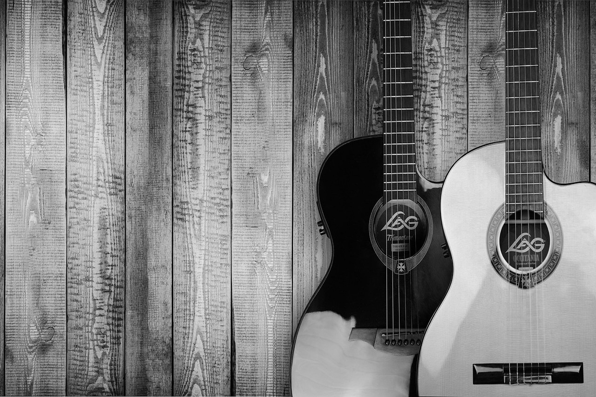
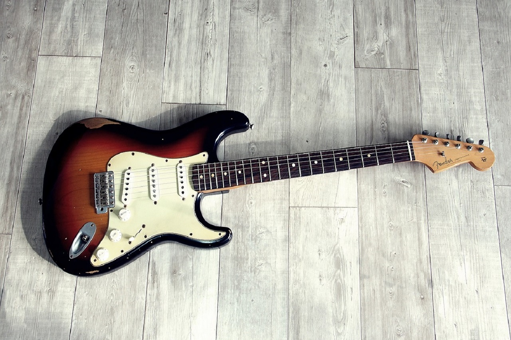

Acoustic
Acoustic guitars sound great and do not require any additional equipment, such as an amplifier. For this reason they are a favorite of beginners.

Electric
Electric guitars are an excellent choice for those who love blues, jazz, rock, and metal. Their smaller body size also makes them great for kids. However, to enjoy the true sound of an electric guitar an amp is a necessity.